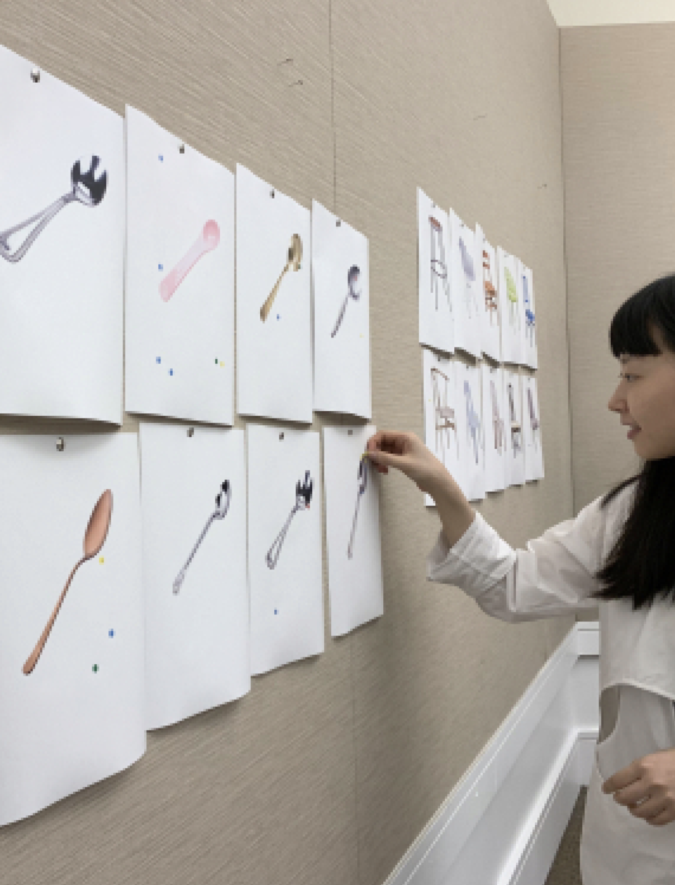
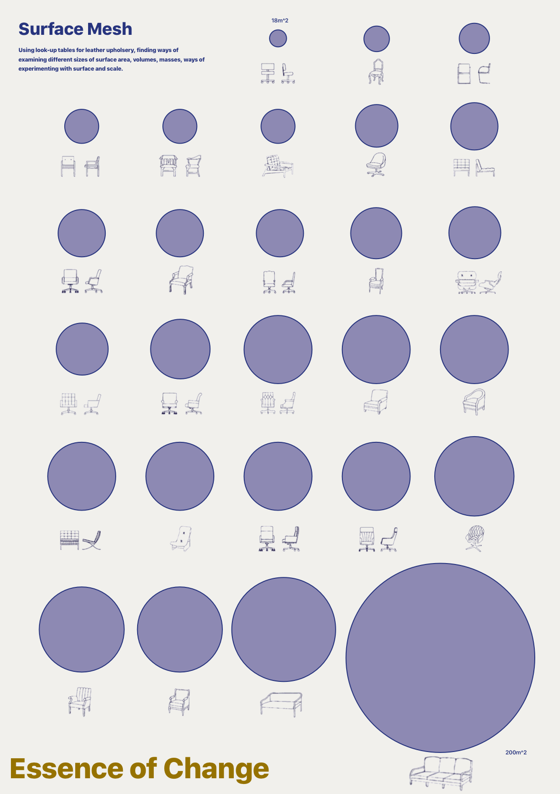
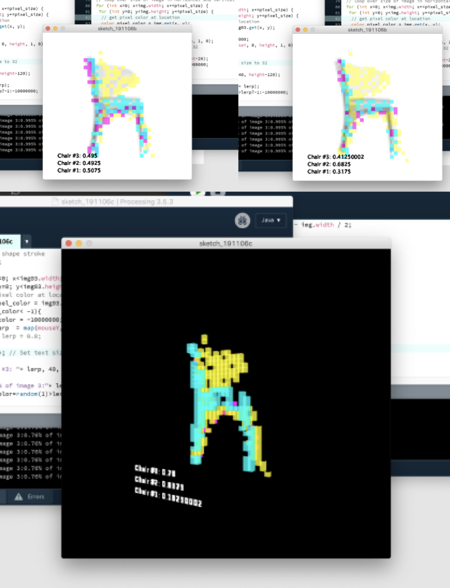
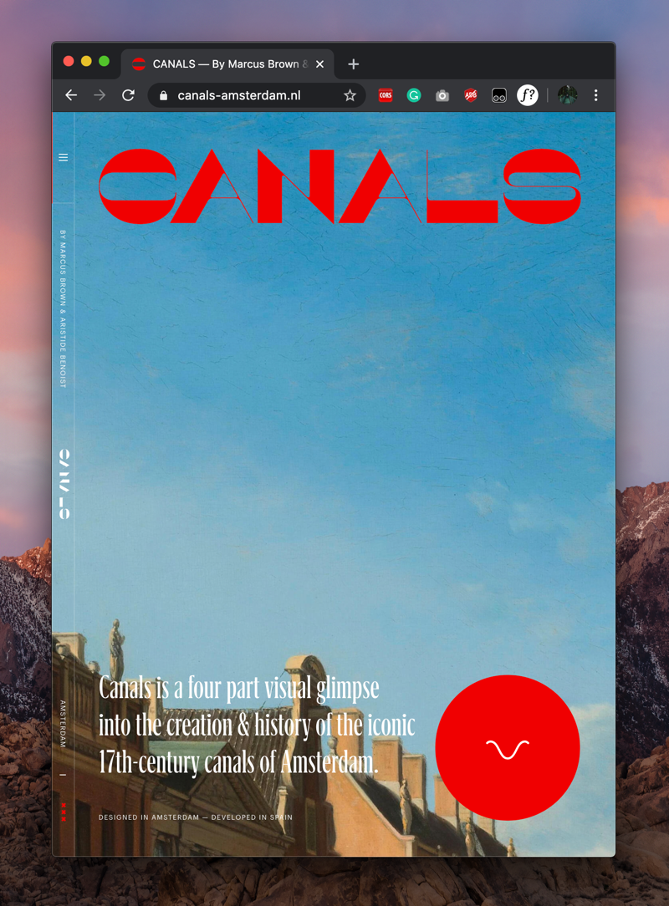
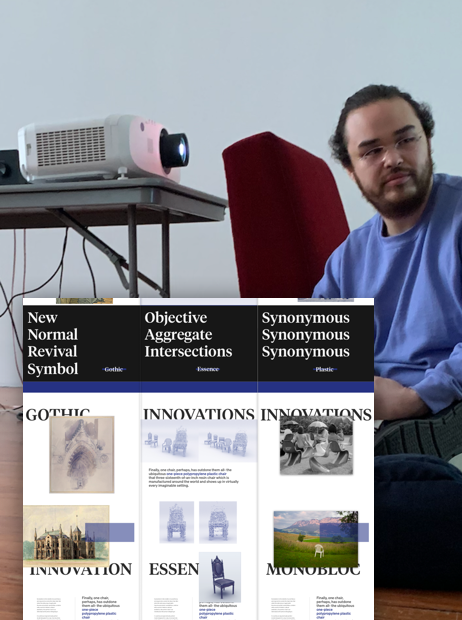

Process
This project came about from a number of different ways. From a young age, I had a broad interest in history. As I tried various methods of articulating myself creatively, I found myself continuing to look at the past as a source of inspiration for my work. When the opportunity came to work for an extended period of time on a thesis project that centred around design, I once again quickly became intensely fascinated with history as a medium to discuss and draw into present conversations about design and our material culture.
During my time at design school, the “history of design” so to speak was captivating. Ever since the industrial revolution, tastes have cycled between embracing and rejecting the introduction of industrial innovation into culture and design. This tension between innovation and more conservative thought became a deep design-related topic that opened broadly into themes of culture, tradition, and authenticity.


Whilst user testing became less of a focus as my work expanded into more theoretical and research-heavy themes, initial explorations into comparing user reactions to different objects laid the groundwork for inquiries into what connects disparate design trends together.

Various explorations into intersections and unique traits between chairs served to make me question cycles and trends in design.
My original line of thought was that there should be some gravitational centre point between the two poles of tradition and innovation. Some of my initial prototypes involved surveys using ‘dotocracy,’ where testers identified parts of spoons that instigated strong emotional responses. My goal was to see if there were trends or themes that connected different styles of objects together.
In an object like a chair, which over time has taken on many forms that evoke certain styles and ideologies, certainly between all of these styles there should be a sort of essence of form, an aggregate epicentre by which all other styles spring. I began to experiment with producing chairs digitally that aggregated different design styles, producing an ‘objective’ chair form. This process involved deep research into chairs; what they were made of, how trends emerged and faded over time, what was consistent over longer periods, etc. Explorations into different methods were aggregating these findings, such as point-clouds, randomness, and fractal curves were developed snd implemented in an effort to arrive at a “final” chair form. These chairs became a core part of the ‘Proposals’ section of my thesis project.
During this period of experimentation with human-computer relationships and inquiries into achieving objectivity, I became critical of my own biases during the design process, biases that naturally emerge in a design process. Whilst I thought leveraging the computer could make a sort of ‘authentic’ and objective chair form, I realised that authenticity could be subjective or up for debate. Thus, my prior research into chairs, and my own experimentation, led me to expand my thesis as a broader inquiry into the nature of authenticity and misrepresentation of history in design. I was critical of how themes such as ‘gothic’ could all use the same sets of symbols or adapted imagery but could take on vastly different meanings whilst co-opting the design to appear traditional. These questions were undertaken in my paper The Tradition of Traditions, which helped frame the expanded research that my thesis intended to tackle.
As I had searched for a connective thread that links disparate designs together, I wanted to come to some conclusion as to what truth in design might mean. What is authentic design? Is it a connective aggregate, a shared essence of past forms, like the chairs I produced? Is authentic what is present, like the chair I am sitting on now, a design that I can’t identify but is ubiquitous in my constructed environment? Or is this life cycle of objects from innovative to traditional, and the subsequent ‘inauthentic’ abstractions and iterations of these objects in fact the truest and most authentic experience of our material culture? These questions expanded into three sets of chairs or topics: Cycles, Proposals, and Ubiquties, detailed throughout this thesis.

Human-computer relationships became a focus of my chair-building process. The tension between subjective and objective perspectives in my work made me question authentic representations or allusions to history in broader topics of design.

Websites such as canals-amsterdam.nl became precedents for drawing historical artefacts together under several themes within a historical narrative.

A conversation with Jason Hirata at 80WSE, NYC, which greatly informed the final shape of this site. More talks with curators and artists such as Peter Fend and Elisa R. Linn also helped to influence the survey/exhibition style of the project.
During this time I was also taking several classes that looked at exhibition design and history. As the COVID outbreak drove me further away from the design studio, the presentation of artifacts in a digital manner became more important. Discussions with several artists and curators helped to lay the groundwork for the website you see today, a digital exhibition or archive.
What comes from this? Answering questions about authenticity is a tedious task. However, by looking at artifacts of our material culture, we can begin to understand how authenticity becomes a symbolic construct, even if the true nature of the authentic becomes elusive. It goes without saying that this body of work is only the seeds that have recently taken to the soil and laid roots, roots that continue to find new depth beneath our lived experience. There is so much more to uncover. I hope this project leads people to take a new interest in historical objects. These artifacts are not just fossils-they impact us now, whether we react to them or iterate from them. As authenticity and identity continue to become topics that dictate our lives, it is important to be critical of objects and movements that appropriate old styles and prescribe new meanings to them. Tradition is used to ground a culture during times of great change. But when traditions uproot histories, the replanting of our pasts are subject to erosion and decay. If we are to remain connected to our pasts (and I hope we do) we should do so carefully, paying respect to that that came before us, and refraining from trying to tell ourselves that that past said something it did not. The essence of change is the search for the authentic, it is clear that what this authentic might be remains unclear, and elusive.
- Forrest Whitcomb
Brooklyn USA, 2020